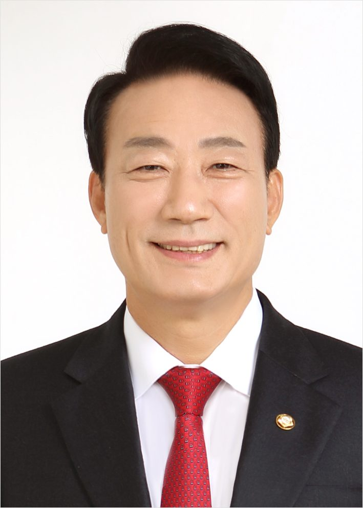
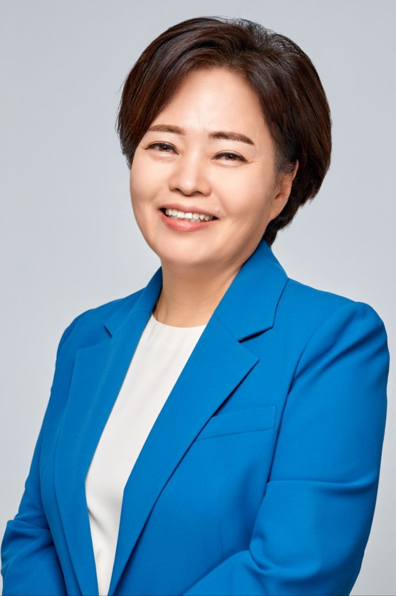

Related Lawmakers 참석 의원 평가
| 의원 이름 | 점수 | 코멘트 |
|---|---|---|
| 1.00점 | 배우는 자세로 임하겠다는 겸손한 태도로 짧고 명료하게 인사함. | |
| 1.00점 | 자신의 전문성과 지역적 특성을 바탕으로 기여하겠다는 의지를 논리적이고 정중하게 밝힘. | |
| 1.00점 | 과거 경험을 바탕으로 위원회 활동의 의미를 부여하며 성실한 태도를 보임. | |
| 1.00점 | 지역적 특수성을 언급하며 정치개혁의 필요성을 위트 있게 표현하는 등 품격 있는 발언을 함. | |
| 1.00점 | 위원장 직무대행으로서 회의를 원만하게 진행하였으며, 유머를 섞어 부드러운 분위기를 조성함. | |
| 1.00점 | 과거의 전례를 지적하며 실질적인 법령 개정의 필요성을 건설적인 방향으로 제안함. | |
|
 |
1.00점 | 친근한 인사와 함께 신속한 마무리와 협력을 강조하며 예의 바르게 발언함. |
| 1.00점 | 위원장으로서 명확한 회의 목표를 제시하고, 모든 위원에게 공평하게 발언 기회를 부여하는 등 품격 있게 회의를 주재함. | |
| 1.00점 | 국민의 기대와 소외 지역의 대표성 문제를 언급하며 정책적인 관점에서 정중하게 발언함. | |
| 1.00점 | 상대 위원을 존중하는 태도로 추천사를 전했으며, 간사로서 협력적인 태도를 보임. | |
| 1.00점 | 시간적 촉박함과 제도적 가치(인구 및 지역 대표성)를 논리적으로 설명하며 활동 의지를 밝힘. | |
| 1.00점 | 여야 합의에 대한 긍정적인 전망을 제시하며 짧고 정중하게 인사함. | |
| 1.00점 | 자신의 경험을 바탕으로 최선을 다하겠다는 의지를 간결하고 정중하게 표현함. | |
| 1.00점 | 자신의 이력과 구체적인 통계 자료를 활용하여 무투표 당선 문제의 심각성을 논리적이고 열정적으로 피력함. | |
|
 |
1.00점 | 비교섭단체의 입장에서 현재 선거제도의 문제점을 구체적인 수치와 함께 논리적으로 비판하고 개혁을 촉구함. |
| 1.00점 | 여야 합의와 대한민국 정치 발전을 강조하며 겸손하고 협력적인 태도로 인사함. |


Representative Cases 문제 발언 사례
문제 사례가 없습니다.